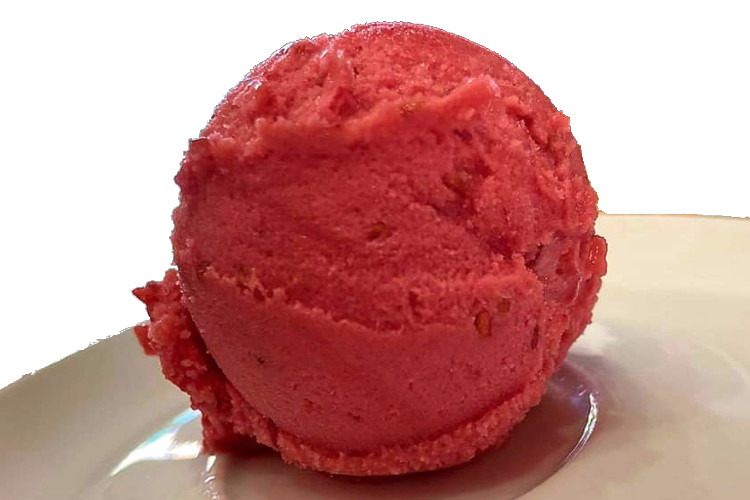

Doskonałej jakości pulpy owocowe bez dodatków cukru
Do wyrobu lodów, ciast, deserów dietetycznych
Zamówienia od 10kg. Wysyłka na terenie Polski
Nasze pulpy są produkowane dla nas w Polsce przez firmę Agrana Fruit Polska, należącą do międzynarodowego koncernu Agrana.
Owoce przetworzone na półprodukty w postaci pulp służą do produkcji lodów, sorbetów, deserów, ciast. Ze względu na brak dodatkowych cukrów mogą być stosowane przy sporządzaniu cateringów dietetycznych i wszelkich innych produktów, które chcemy wzbogacić o owoce. Nadają się również jako dodatek do piw kraftowych, jako składnik smoothies i soków, itp.
Tak wyglądają lody rzemieślnicze z pulpy malinowej:

Od 2010 roku prowadzimy w Kaliszu Cukiernię Na Rogu, wytwórnię ciast i lodów tradycyjnych. Na potrzeby naszego zakładu kupujemy pulpy owocowe, których używamy gdy świeże owoce nie są dostępne. Jest to produkt odpowiadający naszym potrzebom - owoce obrane, wypestkowane, pasteryzowane i pakowane aseptycznie, ale bez barwników, konserwantów, czy dodatkowego cukru.
W koncernie Agrana, z którym współpracujemy, minimalne zamówienie to 1 tona w rodzaju. Są to ilości przekraczające możliwości naszego zakładu, więc zaczęliśmy organizować zamówienia wspólnie z zaprzyjaźnionymi producentami lodów. Z biegiem czasu zajęliśmy się też dystrybucją i sprzedażą dla innych firm.
Poza produkcją ciast, lodów, i dystrybucją pulp oferujemy również doradztwo technologiczne - pomagamy w uruchomieniu zakładów i sporządzamy receptury w oparciu o nasze doświadczenie w produkcji naturalnych lodów rzemieślniczych.
Zapraszamy do składania zamówień, minimalne zamówienie wynosi 10kg w rodzaju.
W ciągłej sprzedaży cytryna, mango, marakuja. Dostępność innych rodzajów oraz ceny zależą od warunków na rynku - prosimy pytać.
Wysyłamy kurierem. Przy dużych ilościach istnieje możliwość dowozu po uzgodnieniu kosztów transportu. Możliwy jest również odbiór w naszym zakładzie w Kaliszu.
Robert Bażant